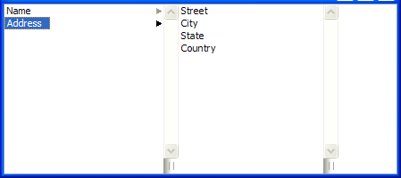

QColumnView Class Reference
[QtGui module]
该QColumnView类提供了一个模型/视图实现列视图中。More...
继承QAbstractItemView。
Methods
-
__init__ (self, QWidget parent = None)
-
list-of-int columnWidths (self)
-
QAbstractItemView createColumn (self, QModelIndex rootIndex)
-
currentChanged (self, QModelIndex current, QModelIndex previous)
-
int horizontalOffset (self)
-
QModelIndex indexAt (self, QPoint point)
-
initializeColumn (self, QAbstractItemView column)
-
bool isIndexHidden (self, QModelIndex index)
-
QModelIndex moveCursor (self, QAbstractItemView.CursorAction cursorAction, Qt.KeyboardModifiers modifiers)
-
QWidget previewWidget (self)
-
resizeEvent (self, QResizeEvent event)
-
bool resizeGripsVisible (self)
-
rowsInserted (self, QModelIndex parent, int start, int end)
-
scrollContentsBy (self, int dx, int dy)
-
scrollTo (self, QModelIndex index, QAbstractItemView.ScrollHint hint = QAbstractItemView.EnsureVisible)
-
selectAll (self)
-
setColumnWidths (self, list-of-int list)
-
setModel (self, QAbstractItemModel model)
-
setPreviewWidget (self, QWidget widget)
-
setResizeGripsVisible (self, bool visible)
-
setRootIndex (self, QModelIndex index)
-
setSelection (self, QRect rect, QItemSelectionModel.SelectionFlags command)
-
setSelectionModel (self, QItemSelectionModel selectionModel)
-
QSize sizeHint (self)
-
int verticalOffset (self)
-
QRect visualRect (self, QModelIndex index)
-
QRegion visualRegionForSelection (self, QItemSelection selection)
Qt Signals
Detailed Description
该QColumnView类提供了一个模型/视图实现列视图中。
QColumnView在一些QListViews ，一个用于在该树中的每个层次的显示一个模型。这有时被称为级联列表。
该QColumnView类是一个Model/View Classes并且是Qt的一部分model/view framework。
QColumnView实现由定义的接口QAbstractItemView类以允许其显示由从派生模型提供数据QAbstractItemModel类。

Method Documentation
QColumnView.__init__ (self, QWidget parent = None)
该parent的说法，如果不是没有，原因self通过Qt的，而不是PyQt的拥有。
构造一个列视图parent来表示模型的数据。使用setModel（）来设定模型。
See also QAbstractItemModel。
list-of-int QColumnView.columnWidths (self)
返回此视图中的所有列的宽度的列表。
See also setColumnWidths（ ） 。
要使用自定义部件的最后一列，当你选择一个项目超负荷此功能，并返回一个widget 。index是将被分配到该视图的根索引。
返回新的观点。QColumnView便会自动将窗口小部件的所有权。
See also setPreviewWidget（ ） 。
QColumnView.currentChanged (self, QModelIndex current, QModelIndex previous)
这种方法也是一个Qt槽与C + +的签名void currentChanged(const QModelIndex&,const QModelIndex&)。
从重新实现QAbstractItemView.currentChanged（ ） 。
int QColumnView.horizontalOffset (self)
从重新实现QAbstractItemView.horizontalOffset（ ） 。
QModelIndex QColumnView.indexAt (self, QPoint point)
从重新实现QAbstractItemView.indexAt（ ） 。
QColumnView.initializeColumn (self, QAbstractItemView column)
复制列视图的行为和选择，并将它们应用到column如iconSize（ ）textElideMode（）和alternatingRowColors（ ） 。重新实现时，这可能是有用的createColumn（ ） 。
此功能被引入Qt的4.4 。
See also createColumn（ ） 。
bool QColumnView.isIndexHidden (self, QModelIndex index)
从重新实现QAbstractItemView.isIndexHidden（ ） 。
从重新实现QAbstractItemView.moveCursor（ ） 。
向左移动应该去主指数向右移动应该去子索引或下降，如果没有孩子
QWidget QColumnView.previewWidget (self)
返回预览窗口小部件，或者0，如果是没有的。
See also setPreviewWidget（）和updatePreviewWidget（ ） 。
QColumnView.resizeEvent (self, QResizeEvent event)
从重新实现QWidget.resizeEvent（ ） 。
bool QColumnView.resizeGripsVisible (self)
QColumnView.rowsInserted (self, QModelIndex parent, int start, int end)
从重新实现QAbstractItemView.rowsInserted（ ） 。
QColumnView.scrollContentsBy (self, int dx, int dy)
从重新实现QAbstractScrollArea.scrollContentsBy（ ） 。
从重新实现QAbstractItemView.scrollTo（ ） 。
QColumnView.selectAll (self)
从重新实现QAbstractItemView.selectAll（ ） 。
QColumnView.setColumnWidths (self, list-of-int list)
列宽设置为在给定的值list。在列表中多馀的值会保持不变，在创建列时使用。
如果列表中包含的值太少，只有宽度的列的其馀部分将不会被修改。
See also columnWidths（）和createColumn（ ） 。
从重新实现QAbstractItemView.setModel（ ） 。
QColumnView.setPreviewWidget (self, QWidget widget)
该widget说法有它的所有权转移给Qt的。
设置预览widget。
该widget成为列视图的孩子，当列区域被删除或者当一个新的widget设定将被破坏。
See also previewWidget（）和updatePreviewWidget（ ） 。
QColumnView.setResizeGripsVisible (self, bool visible)
QColumnView.setRootIndex (self, QModelIndex index)
从重新实现QAbstractItemView.setRootIndex（ ） 。
从重新实现QAbstractItemView.setSelection（ ） 。
QColumnView.setSelectionModel (self, QItemSelectionModel selectionModel)
从重新实现QAbstractItemView.setSelectionModel（ ） 。
QSize QColumnView.sizeHint (self)
从重新实现QWidget.sizeHint（ ） 。
int QColumnView.verticalOffset (self)
从重新实现QAbstractItemView.verticalOffset（ ） 。
QRect QColumnView.visualRect (self, QModelIndex index)
从重新实现QAbstractItemView.visualRect（ ） 。
QRegion QColumnView.visualRegionForSelection (self, QItemSelection selection)
从重新实现QAbstractItemView.visualRegionForSelection（ ） 。
Qt Signal Documentation
void updatePreviewWidget (const QModelIndex&)
这是该信号的默认超载。
这个信号被发射时，预览窗口小部件应进行更新，以提供有关致富信息index
See also previewWidget（ ） 。